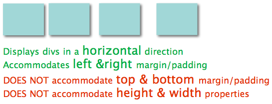
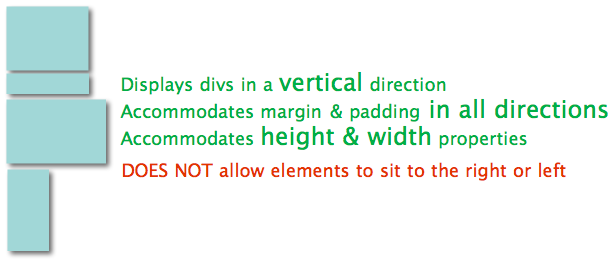
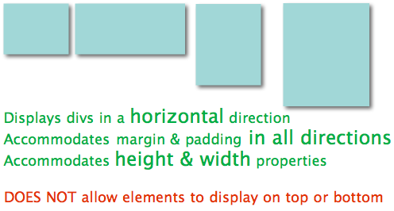

CSS: When To Use Inline vs. Inline-Block
March 6, 2015
There are some specific rules to be aware of before using CSS's display property. Knowing when to use inline, block or inline-block is a lot easier when you understand how each value responds to other properties like margin, padding, height & width. Take a look at the diagrams below for a quick breakdown of each value's behavior. We'll assume the squares below are div's.
Inline
The inline display value puts elements in a horizontal line formation, like the blocks below. This comes at a cost though, because it also prevents you from adjusting the height, width, and top/bottom margin & padding. You can still adjust the left/right margin & padding but that may be inconvenient if your code requires more flexibility.
In the example below all 4 blocks are the same size (because height and width cannot be adjusted), but there is some space (margin) between a few elements because margin can be adjusted on the left/right side of inline elements.
Block
The display block value creates line breaks between elements and displays them in a vertical formation, it also accommodates adjustments to height and width which is why all 4 blocks are different sizes. Unlike inline, block also respects margin & padding adjustments on all 4 sides.
Inline-Block
Finally there's inline-block, which is the perfect love child of inline and block. This value is like inline in that it displays elements in a horizontal orientation but it also accommodates all adjustments to height, width, margin and padding.
The follow up question then is...why would we ever use inline if inline-block performs the same function and affords a lot more flexibility? To be continued...